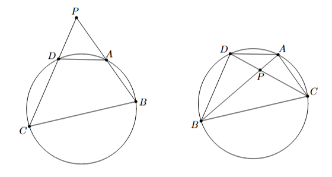

1. Directed Lengths
First, we are going to define directed lengths. If we say we are using directed lengths, then for any three collinear points $A$, $B$, $C$, the ratio $\frac{AB}{AC}$ is said to be $\frac{AB}{AC}$ if rays $\overrightarrow{AB}$ and $\overrightarrow{AC}$ point in the same direction, and $-\frac{AB}{AC}$ otherwise. The same applies for products as well. A few pictures are shown below. Using directed lengths, find the ratios $\frac{XA}{XB}$ and $\frac{YA}{YB}$ in the diagram below.
This hints to why these are useful as indeed, while the magnitudes of these ratios are the same, one is $2$ and the other is $-2$. The more explicit upshot of these is that given two points $A$, $B$ and a point $P$ lying on line $AB$, the statement $\frac{PA}{PB}$ does not actually tell you where $P$ is if you are not using directed lengths. Sure, it whittles it down to two points, but you do not know which one is $P$. If you use directed lengths, one is positive and one is negative, hence the ratio $\frac{PA}{PB}$ tells you exactly where $P$ is.
2. Power of a Point
Okay, now we can actually get into power of a point.
Theorem 2.1 (Power of a Point)
Let $A$, $B$, $C$, $D$ be points with $AB$ and $CD$ intersecting at $P$. Then $A$, $B$, $C$, $D$ are concyclic if and only if $PA\cdot PB=PC\cdot PD$, where the lengths are directed.
The lengths being directed essentially whittle it down to two configurations (as these are the only ones that actually "work"), as shown below.

Proof. Suppose the points are concyclic. We omit the directed lengths condition as $PA\cdot PB$ and $PC\cdot PD$ are both negative if $P$ is inside $(ABCD)$ and positive if $P$ is outside $(ABCD)$. Then $\angle PAC=\angle PDB$ (why?) so $\triangle PAC\sim \triangle PDB$, meaning $\frac{PA}{PC}=\frac{PD}{PB}\implies PA\cdot PB=PC\cdot PD$, as desired.
Otherwise suppose $PA\cdot PB=PC\cdot PD\implies\frac{PA}{PC}=\frac{PD}{PB}$, and since $\angle APC=\angle DPB$, we have $\triangle PAC\sim\triangle PDB$, meaning $\angle PAC=\angle PDB$ so $ABCD$ is cyclic.
Definition 2.2
Let $\omega$ be a circle centered at $O$ with radius $r$ and $P$ an arbitrary point. Then we define the power of $P$ with respect to $\omega$ as $\text{Pow}(P,\omega)=OP^2-r^2$.
Sure, $\text{Pow}(P,\omega)=0$ if $P\in\omega$, but how is this useful? Consider the following.
Theorem 2.3
Let $\omega$ be a circle and $P$ be an arbitrary point. If $A$ and $B$ are on $\omega$ such that $P$ is on line $AB$, then $\text{Pow}(P,\omega)=PA\cdot PB$, where lengths are directed.
Proof. First, let us get rid of these annoying sign conditions. The power in both definitions is negative if $P$ is on the interior of $\omega$ and positive if $P$ is on the exterior of $\omega$ (why?) and are both $0$ if $P$ is on $\omega$ (as the "length" of a point is $0$).
Otherwise, let $PO$ meet $\omega$ at $X$ and $Y$. A diagram is shown below.
The key idea is to write $OP^2-r^2$ as $(PO-r)(PO+r)$ (or $(r-PO)(r+PO)$ if $P$ is on the interior of $\omega$), from where these values are just $PX$ and $PY$, so $OP^2-r^2=PX\cdot PY=PA\cdot PB$ by
Theorem 2.1, as desired.
Note that this encapsulates part of
Theorem 2.1 as now for any four points $A$, $B$, $C$, $D$ on one circle $\omega$ and arbitrary point $P$, $PA\cdot PB=\text{Pow}(P,\omega)=PC\cdot PD$.